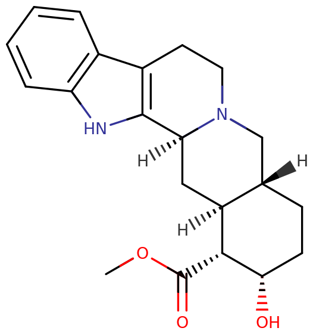

Yohimbine
| Yohimbine |
|---|
|  |
| Chemical Nomenclature |
| Yohimbine, Yohimbe, Yocon, Yocoral or quebrachine |
| methyl (1S,15R,18S,19R,20S)-18-hydroxy-1,3,11,12,14,15,16,17,18,19,20,21-dodecahydroyohimban-19-carboxylate |
| Class Membership |
| Stimulant |
| Alpha-2 adrenergic receptor antagonist / Indole alkaloid |
| Dosage |
| Threshold: 0.5 mg |
| Common: 5 - 12 mg |
| Strong: 25 mg + |
| Duration |
| Total: 3 - 5 hours |
| Onset: 15 - 30 minutes |
| Peak: 1 - 2 hours |
| Interactions |
| Tramadol |
| Alcohol |
| 25x-NBOMe & 25x-NBOH |
| DXM |
| MXE |
| Stimulants |
| MAOIs |
Yohimbine (Extracted from Yohimbe bark) is a naturally-occurring stimulant substance of the indoloquinolizidine class. It has various uses including as an aphrodisiac and a weight loss agent. Most often, yohimbine is used in the form of hydrochloride.
Yohimbine, an alpha-2 adrenergic receptor antagonist, is an indole alkaloid found in numerous botanical sources. It is the predominant alkaloid in extracts from the bark of the Pausinystalia johimbe tree, and can also be found in Rauwolfia root.[?] Many of its effects are attributed to its α2-adrenergic receptor antagonist activity, which raises central sympathetic outflow and raises blood pressure, heart rate, norepinephrine levels in the CNS[6][7], and nitric oxide levels in the corpus cavernosum.[12]
Yohimbine is also used as a mydriatic and sympatholytic and has been suggested as an antidote to clonidine and xylazine overdose.[?]
While some reviewers noted that this extract did help them maintain an erection, lose weight or increase their energy level, many noted that the side effects they experienced outweighed any benefits they received. Some took a dosage that was considerably lower than recommended and still had unwanted side effects.[9][10][11]
| Contents |
|---|
|
1 Uses 4 Research |
Uses
Yohimbine has not been proven to enhance sexual thoughts or desire, although it does increase the likelihood of obtaining and maintaining an erection.[5]
Pharmacology
The primary and most researched mechanism of yohimbine is antagonism of a class of receptors known as alpha-2 adrenergic receptors, thus it raises noradrenaline levels by preventing their uptake into subsequent neurons. Antagonism of alpha-2 adrenoceptors also raises nitric oxide levels in the corpus cavernosum. Blocking alpha-2 adrenoceptors raises blood pressure, releases insulin, and decreases blood sugar levels. Yohimbine also, however, blocks alpha-1 adrenergic receptors, albeit with lower affinity. It also has been shown to weak inhibit monoamine oxidase.[?]
In high concentrations yohimbine behaves as an antagonist at dopamine D2 and D3 receptors, serotonin 5-HT1B, 5-HT1D, and 5-HT2B receptors, and as a partial agonist at 5-HT1A.[?]
Subjective effects
Compared to other stimulants, yohimbine can be described as less recreational. For many users, it is unpleasant, and often even with a small dosage causes anxiety, irritability and dysphoria. Higher doses seem to increase or intensify adverse effects.[?]
Disclaimer: The effects listed below are cited from my Subjective Effect Index (SEI), which relies on assorted anecdotal reports and the personal experiences of Erowid contributors. As a result, they should be taken with a healthy amount of skepticism. It is worth noting that these effects will not necessarily occur in a consistent or reliable manner, although higher doses (common+) are more likely to induce the full spectrum of reported effects. Likewise, adverse effects become much more likely on higher doses and may include serious injury or death.
| Physical effects |
|---|
Yohimbine seems to give more physical energy and effects compared to cognitive effects.
|
| Cognitive effects |
|---|
|
Experience reports
Research
There is insufficient evidence proving the effectiveness of Yohimbine for the treatment of ED[1][2][3], although it's mechanisms of action may explain the reported aphrodisiac effects induced by Yohimbine.
Norepinephrine
Disinhibition or increased impulsivity caused by epinephrine may increase sexual behavior and is observed in patients administered with Yohimbine.[4] Increase of sexual stimulation or arousal is likely caused by CNS stimulation induced by antagonism of the α2-adrenergic receptor.[5] Antagonism of the α2-adrenergic receptor causes CNS stimulation by preventing norepinephrine uptake into subsequent neurons, causing an increase of norepinephrine.[6] Norepinephrine increases CNS arousal and alertness, but may induce adverse effects such as restlessness, anxiety, high heart rate and high blood pressure[7]; effects commonly reported by Erowid users.[8][9][10][11]
Nitric Oxide
Antagonism of the α2-adrenergic receptor also causes an increase of nitric oxide, via a lengthy process involving both the α1-adrenergic and α2-adrenergic receptors. Norepinephrine release from the adrenergic nerves binds to the pre-junctional α2-adrenoceptor on the non-adrenergic, non-cholinergic (NANC) nerves and inhibits nitric oxide synthesis and release. Blockade of this reaction by selective α2 receptor antagonists (e.g. yohimbine or delequamine) will enhance nitric oxide release, facilitating erection. Whereas nitric oxide released in the corpus cavernosum is the major vasodilator contributing to the erectile process, norepinephrine is the major vasoconstrictor through stimulation of α1 receptors on the corpus cavernosum smooth muscle. However, if an α1 receptor antagonist is introduced, any enhancement of norepinephrine release is of little importance because the α1 receptor antagonist will impede this vasoconstrictor response. This will also enhance the release of nitric oxide, which raises smooth muscle relaxation and decreases contraction resulting in penile erection.[12]
Toxicity and harm potential
Yohimbine has a low toxicity relative to dose. Various studies have shown that in reasonable doses in a careful context, it presents few negative cognitive, psychiatric or toxic physical consequences, though some exist. The side effects of yohimbine are clearly dose-dependent, are generally apparent at doses much higher than the claimed therapeutic doses. Generally all reported side effects of yohimbine are reversible and resolve spontaneously within a relatively short time after termination of the drug therapy[?], and most individuals who experience the inadvertent use of toxic doses will recover after a relatively short period of expectant restoration, which is measured in hours. Deaths from yohimbine overdosing are uncommonly reported but nonetheless published.[?] Higher doses (200 – 5,000 mg) result in stronger side effects and can be toxic to the brain. Extremely high doses (above 5,000 mg) can be lethal.[?]
Not recommended for individuals who have bleeding conditions as it can increase the risk of bleeding.[?] For this reason, it is also dangerous for individuals who recently had a surgery. For those already taking this supplement, it is advised to stop intake two weeks before the scheduled surgery.
It is strongly recommended that one be familiar with harm reduction practices when using this drug.
Dependence and abuse potential
Yohimbine is not known to be not habit-forming and the desire to use it can actually decrease with use. It is most often self-regulating.
Tolerance to the effects of yohimbine are quickly built after repeated and frequent usage. After that, it takes about 7 days for the tolerance to be reduced to half and 14 days to be back at baseline (in the absence of further consumption). Yohimbine does not produce cross-tolerance with most other stimulants.[?]
Dangerous interactions
Although many psychoactive substances are reasonably safe to use on their own, they can quickly become dangerous or even life-threatening when combined with other substances. The list below includes some known dangerous combinations (although it cannot be guaranteed to include all of them). Independent research (e.g. Google, DuckDuckGo) should always be conducted to ensure that a combination of two or more substances is safe to consume. Some interactions listed have been sourced from TripSit.
25x-NBOMe & 25x-NBOH - Members of the 25x family are highly stimulating and physically straining.[?] Combinations with stimulants should be avoided due to the risk of excessive stimulation. This can result in panic attacks, thought loops, seizures, increased blood pressure, vasoconstriction, and heart failure in extreme cases.
Alcohol - Alcohol can be dangerous to combine with stimulants due to the risk of accidental over-intoxication. Stimulants mask the sedative effects of alcohol, which is the main factor people use to assess their degree of intoxication. Once the stimulant wears off, the depressant effects of alcohol are left unopposed, which can result in blackouts and respiratory depression. If combined, one should strictly limit themselves to only drinking a certain amount of alcohol per hour.
DXM - Combinations with DXM should be handled with extreme care due to DXM's effects on serotonin and norepinephrine reuptake.[?] This can lead to panic attacks, hypertensive crisis, or serotonin syndrome with stimulants that increase levels of serotonin (MDMA, methylone, mephedrone, etc.). Monitor blood pressure carefully and avoid strenuous physical activity.
MXE - Combinations with MXE may dangerously elevate blood pressure and increase the risk of psychosis.[?]
Stimulants - Yohimbine can be potentially dangerous in combination with other stimulants as they can increase one's heart rate and blood pressure to dangerous levels.
Tramadol - Tramadol lowers the seizure threshold.[13] Combinations with stimulants may further increase this risk.
MAOIs - This combination may increase the amount of neurotransmitters such as dopamine to dangerous or even fatal levels.
Legal status
US: FDA approved as a dietary supplement
CA: ℞-only
AU: S4 (Prescription only)
External links
References
1. Riley AJ, Goodman RE, Kellett JM, Orr R . Double blind trial of yohimbine hydrochloride in the treatment of erection inadequacy. Sex Marital Ther 1989 4: 17–26. https://doi.org/10.1080/02674658908407870
2. Ernst, E., & Pittler, M. H. (1998). Yohimbine for erectile dysfunction: a systematic review and meta-analysis of randomized clinical trials. The Journal of urology, 159(2), 433–436. https://doi.org/10.1016/s0022-5347(01)63942-9
3. Mann, K., Klingler, T., Noe, S. et al. Effects of yohimbine on sexual experiences and nocturnal penile tumescence and rigidity in erectile dysfunction. Arch Sex Behav 25, 1–16 (1996). https://doi.org/10.1007/BF02437904
4. Swann, A.C., Lijffijt, M., Lane, S.D. et al. Norepinephrine and impulsivity: effects of acute yohimbine. Psychopharmacology 229, 83–94 (2013). https://doi.org/10.1007/s00213-013-3088-7
5. Schober J, Weil Z, Pfaff D. How generalized CNS arousal strengthens sexual arousal (and vice versa). Horm Behav. 2011;59(5):689-695. https://doi.org/10.1016/j.yhbeh.2010.10.005
6. Wang, B., Wang, Y., Wu, Q., Huang, H. P., & Li, S. (2017). Effects of α2A Adrenoceptors on Norepinephrine Secretion from the Locus Coeruleus during Chronic Stress-Induced Depression. Frontiers in neuroscience, 11, 243. https://doi.org/10.3389/fnins.2017.00243
7. Herat, L. Y., Schlaich, M. P., & Matthews, V. B. (2019). Sympathetic stimulation with norepinephrine may come at a cost. Neural regeneration research, 14(6), 977–978. https://doi.org/10.4103/1673-5374.250576
8. rachelrabbit. "He Gave Me Butterflies All Over!: An Experience with Yohimbe (exp72222)". Erowid.org. Apr 12, 2016. erowid.org/exp/72222
9. hyacinthus. "About as Much Fun as a Caffeine Overdose: An Experience with Yohimbe (exp8597)". Erowid.org. Aug 7, 2001. erowid.org/exp/8597
10. Divalion. "Stronger than Caffeine -- Yohimbe: An Experience with Yohimbe (exp4708)". Erowid.org. Jan 19, 2001. erowid.org/exp/4708
11. Atlas. "Almost as Fun as Being Poisoned...Almost: An Experience with Yohimbe (exp100068)". Erowid.org. Jun 17, 2020. erowid.org/exp/100068
12. Saenz de Tejada, I., Kim, N., Goldstein, I. et al. Regulation of pre-synaptic alpha adrenergic activity in the corpus cavernosum. Int J Impot Res 12, S20–S25 (2000). https://doi.org/10.1038/sj.ijir.3900500
13. Talaie, H., Panahandeh, R., Fayaznouri, M. R., Asadi, Z., & Abdollahi, M. (2009). Dose-independent occurrence of seizure with tramadol. Journal of Medical Toxicology, 5(2), 63-67. https://doi.org/10.1007/BF03161089